WES Xerox - Prérequis et configuration préalable
Configurer les ports
Les ports réseau à ouvrir pour permettre le fonctionnement des WES sont les suivants :
| Source | Port | Protocole | Cible |
| Service Watchdoc comptabilisation (jba) pour l'authentification, port sécurisée obligatoire |
TCP 80 |
HTTP
|
Périphérique d'impression |
Modèles AltaLink et VersaLink
Principe
Avant d'installer le WES Xerox sur un modèle AltaLink ou VersaLink, il est nécessaire de configurer les paramètres suivants sur le périphérique d'impression :
-
mot de passe administrateur
-
fuseau horaire
-
méthode de comptabilisation
-
communautés SNMP
-
sécurisation TLS
-
éventuellement, installation du lecteur de badges (si l'authentification repose sur un badge).
Accéder à l'interface de configuration
Ces configurations sont définies depuis l'interface web d'administration du périphérique. Pour y accéder,
-
saisissez l'IP du périphérique dans un navigateur web.
-
authentifiez-vous comme administrateur du périphérique.
Changer le mot de passe Administrateur
Pour accéder à l'interface d'administration du périphérique d'impression, il est nécessaire de changer le mot de passe de l'administrateur par défaut :
-
une fois authentifié, dans la bannière du haut à droite, cliquez sur Admin > Mon profil :
-
dans l'interface Mon Profil affichée, cliquez sur le bouton Modifier le mot de passe ;
-
dans la boîte de dialogue, indiquez l'ancien mot de passe ainsi que le nouveau ;
-
puis cliquez sur le bouton OK pour valider :
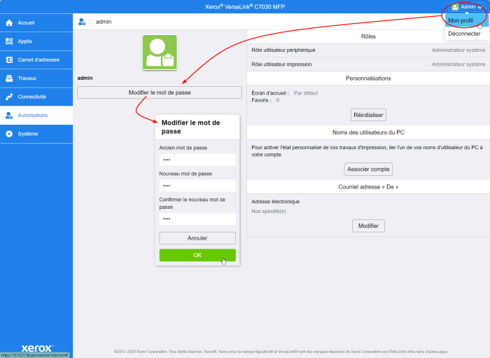
→ l'interface se recharge et vous déconnecte : authentifiez-vous avec le nouveau mot de passe pour en vérifier la validité.
Régler le fuseau horaire
-
depuis l'interface web d'administration du périphérique, cliquez sur l'entrée de menu Système > Date et heure ou Propriétés > Paramètres généraux > Date et heure ;
-
dans l'interface Date et heure, réglez les paramètres en fonction de vos besoins ;
-
sélectionnez le format de date ainsi que le fuseau horaire correspondant à votre localisation ;
-
cliquez sur OK pour valider vos paramètres :
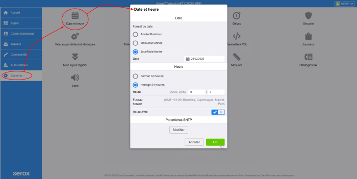
Configurer la méthode de comptabilisation
Sur les modèles VersaLink B
Pour permettre la comptabilisation des travaux par Watchdoc, il convient d'activer le XSA (Xerox Secure Access - Unified ID System) et d'activer la comptabilisation réseau sur le périphérique :
-
depuis l'interface web d'administration du périphérique, rendez-vous sous l'onglet Propriétés > Connexion / Autorisation d'accès / Comptabilisation > Méthodes de connexion ou Autorisations > Méthode de comptabilisation
-
Dans l'interface Modifier les méthodes de connexion, pour le paramètre Connexion à partir du panneau de commande, sélectionnez la méthode Xerox Secure Access :
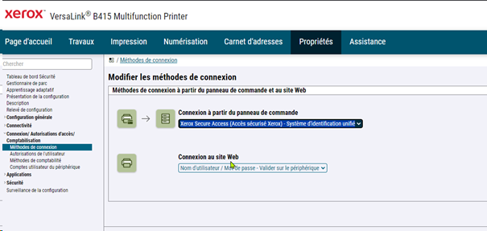
-
puis cliquez sur Connexion / Autorisation d'accès / Comptabilisation > Méthodes de compatibilité ;
-
dans l'interface Modifier la méthode, sélectionnez la méthode Comptabilisation réseau :
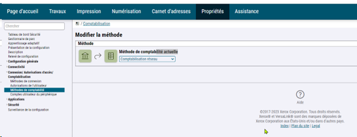
Sur les modèles VersaLink C
-
depuis l'interface web d'administration du périphérique, cliquez sur Autorisations > Méthodes de comptabilisation :
-
Dans l'interface Méthodes de comptabilisation, activez la comptabilisation Réseau :
-
puis cliquez sur OK pour valider le paramétrage :
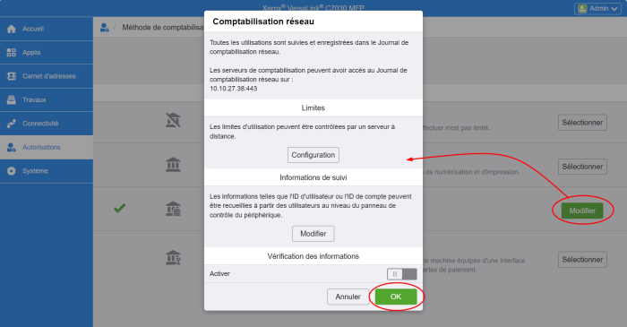
Paramétrer les communautés SNMP
Sur les modèles B
-
Depuis l'interface web d'administration du périphérique, rendez-vous sous l'onglet Properties >
Connectivity > Setup ;
-
dans la section SNMP properties, cochez la case Activate the SNMP V1/V2c protocol ;
-
cliquez sur le bouton Edit SNMP v1/v2c properties ;
-
dans les champs Community Name, vérifiez les valeurs suivantes :
-
GET Community Names : public
-
SET Community Name: private
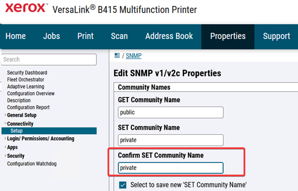
Sur les modèles C
-
Depuis l'interface web d'administration du périphérique, cliquez sur Connectivité > SNMP ;
-
dans la section SNMP properties, cliquez sur la ligne SNMP V1/V2c ;
-
dans l'interface SNMPv1/v2, section Noms communauté, vérifiez les valeurs suivantes :
-
Nom de communauté Lecture seule: public
-
Nom de communauté Lecture/écriture : private
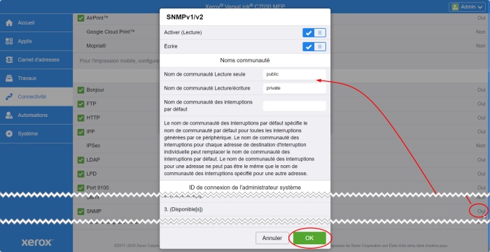
-
-
cliquez sur OK pour valider.
-
Vérifier sur le profil WES
Au terme de la configuration du WES sur la file dans l'interface d'administration de Watchdoc, vous pourrez vérifier la concordance de la configuration : sur la file d'impression à laquelle est associée le WES :
-
depuis l'interface d'administration de Watchdoc Menu principal, cliquez sur Files d'impression > Xerox > Propriétés > Section Monitoring > Editer la configuration) :
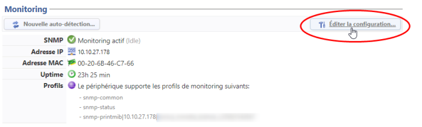
-
dans la section Communauté, vérifiez que les valeurs saisies pour la Communauté de lecture et la Communauté d'écriture sont identiques à celles du périphérique :
-
Au besoin, modifiez-les pour qu'elles soient identiques :
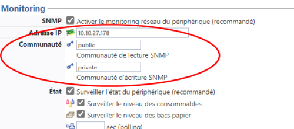
Activer la sécurisation TLS
Sur les modèles B
-
Depuis l'interface web d'administration du périphérique, rendez-vous sous l'onglet Properties > Security > TLS ;
-
dans la section TLS, optez pour TLS 1.1 and TLS 1.2 :
Sur les modèles C
-
Depuis l'interface web d'administration du périphérique, cliquez sur Système > Sécurité
-
dans la section Sécurité Réseau, cliquez sur Paramètres SSL/TLS ;
-
dans l'interface Paramètres SSL/TLS, cochez
-
TLS 1.1
-
TLS 1.2
-
Communication HTTP-SSL/TLS
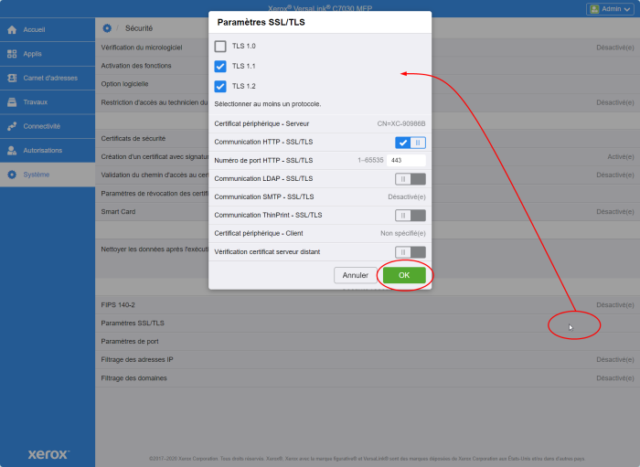
-
-
Cliquez sur OK pour valider.
Installer le lecteur de badge
Pour les modèles C
Pour permettre aux périphériques C405 de lire les badges, il est nécessaire d'installer un plug-in spécifique téléchargeable depuis le site web Xerox.
-
depuis le site web Xerox, téléchargez le fichier compressé VersaLink_Card_Reader_Plugins.7.zip ;
-
décompressez le fichier dans un dossier temporaire du serveur d'impression ;
-
depuis l'interface d'administration du périphérique, cliquez sur Système puis sur le bouton Paramètres des plug-in;
-
dans la boîte Paramètres des Plug-ins , activez la fonction Fonctions de plug-in ;
-
cliquez sur Ajouter ;
cliquez sur Fermerpour fermer la boîte :
-
dans la boîte Ajouter un plug-in, cliquez sur Sélectionner, puis sélectionnez l'exécutable Generic_CardReader.jar contenu dans l'archive décompressée en début d'installation ;
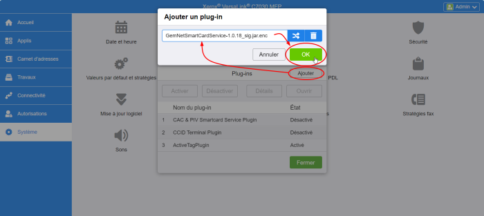
-
cliquez sur le bouton Redémarrrer maintenant :
→ un message informe que le périphérique est indisponible durant le redémarrage.
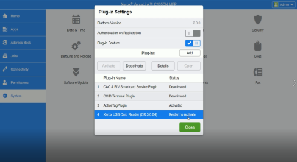
-
Le périphérique est redémarré.
Déconnectez-vous de l'interface d'administration du périphérique et procédez à la création / configuration du WES.